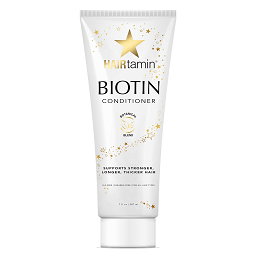

- hairtamin tablet:
MADE IN THE USA-HAIRtamin is a
powerful hair nourishing supplement, with clinically-proven
ingredients designed to support stronger, longer, thicker hair.
Our potent blend of vitamins, minerals and herbs plus a
powerful super-antioxidant complex synergistically promotes
existing hair growth, and increased follicle strength for
the beautiful, healthy hair you desire.

- hairtamin conditioner:Biotin Botanical Conditioner is an
ultra-hydrating blend of Biotin, Silk Proteins and Antioxidants
nourish & repair each strand, leaving hair noticeably smoother,
shinier & healthier.* Formulated for both women & men,
all hair types / textures / ethnicities Gentle for everyday use
